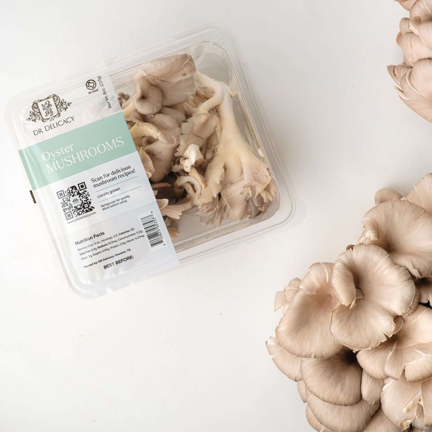
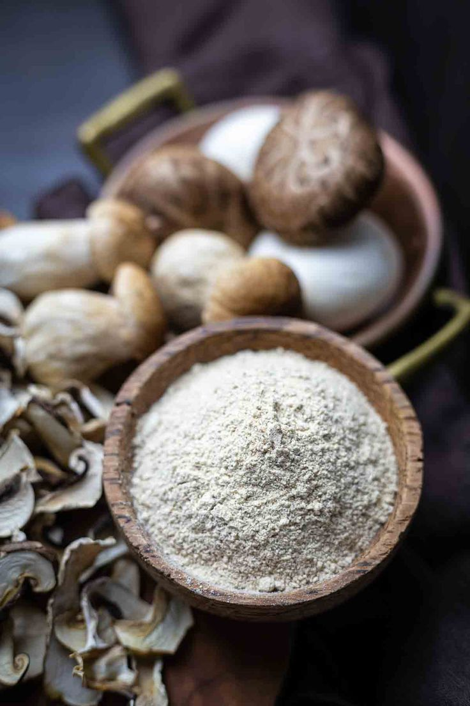

Fresh Oyster Mushrooms
Organically grown, high-protein oyster mushrooms harvested daily for the best quality and flavor.
Available in: 250g • 500g • 1kg packs

Mushroom Porridge Flour
Our signature nutrient-rich porridge flour blend made from dried oyster mushrooms — perfect for children and adults.
Rich in: Protein, Iron, Vitamins B & D

Value-Added Products
Mushroom crisps, mushroom soup mix, and dried mushrooms for cooking and snacks.
Healthy alterna